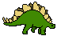

| Image |
Name |
Information |
|
Spinosaurus |
- Lifetime: 112 to 97 million years ago (Cretaceous Period)
- Size: 12.6 - 18 meters [Length], 3.5 - 5 meters [Height]
- Weight: 7 - 20.9 tonnes
- Originally found via Egyptian remains which were destroyed in WWII
- The spines on its back are extensions of its vertebrae
- The spines could grow to be over 5 feet long and formed a sail-like structure
- Believed to have lived in both land and water like a modern crocodile
|
|  |
Stegosaurus |
- Lifetime: 155 to 150 million years ago (Late Jurassic Period)
- Size: 7.5 - 9 meters [Length], 3 - 4 meters [Height]
- Weight: 2 - 3 tonnes
- The hard spikes on their back were used as defense against predators
- It's believed that the spikes could have also had a thermoregulatory function
- They had an exceptionally low brain-to-body mass ratio
- The name "Stegosaurus" means "roof lizard"
|
|
Triceratops |
- Lifetime: Roughly 68 million years ago (Cretaceous Period)
- Size: 7.9 - 9 meters [Length], 2.9 - 3 meters [Height]
- Weight: 6.1 - 12 tonnes
- While its horns were thought to be used defensively, they were also thought
to be used for identification, courtship, and dominance displays
- While it's thought that the Tyrannosaurus preyed on Triceratops, their
battles most likely did not occur as displayed in popular media
- The name "Triceratops" means "three-horned face"
|
 |
Tyrannosaurus |
kek |
|
Velociraptor |
ayy lmao |